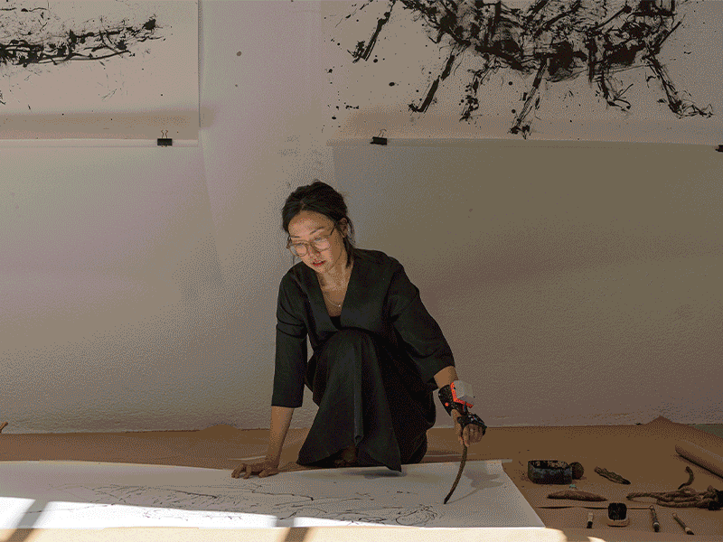
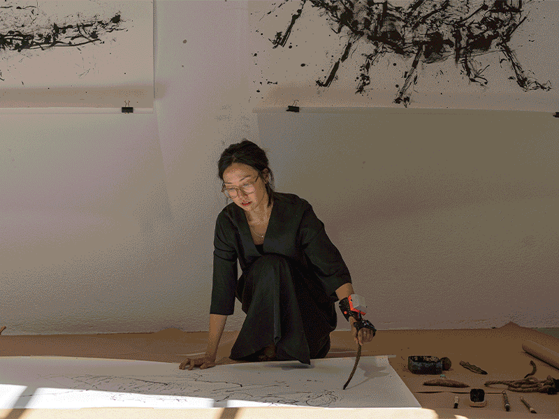

🗓 May 2022
My intervention this term was an exploration of how ideas can be expressed through the body, tools, and sound. The community involved was the Poblenou Urban District, neighbors, artists, children, and anyone who was able to come to the event.
I reached out to the Poblenou Urban District with a proposal for their Window Arts Circuit (WAC) program, an event within the Poblenou Open Day event. I proposed to make a series of live drawings on the topic of the insect extinction. There were a few topics I wanted to focus on including tools, co-dependencies, responsive technologies.
I have been interested in the topic of tools for many years. Especially the cycle of humans transforming tools and in turn, being transformed by tools on individual and collective levels. I define tools not only as physical objects, but also mental or emotional systems in which we design to help us achieve something. Last year, through the “100 day project” platform, I explored using drawing and art as a tool to face my fear of insects and challenge my perfectionist tendencies. I drew 100 insects using my left hand and unconventional found tools.
While drawing with found tools, I observed not only a transformation to the outcome of my drawings, but also a shift in my pace, my attitude, and feelings towards the process. Because I was using a tool I wasn’t used to for drawing, it made me slow down, observe, and focus on the way my body was moving. As waves of frustration and desire for perfection approached me, I was able to notice and continue with the rules I gave myself. The outcome was always unexpected but interesting, which gave me the freedom to let go of perfection.
Co-dependencies within nature and the urban space, is a topic I explored with Borka in the last term through a co-design workshop on urban biodiversity. I believe co-dependency is a holistic point of view of nature, phenomena, and relationships. It is understanding that no thing or action lives independently from everything else, and is also impacted by forces outside of itself. I believe this is important to understand in the context of design because designers with a mission to solve a problem can get too focused on the mission and forget about tangential impacts of the design or process. I don’t think it’s possible, as humans, to have complete perception and control over all of our actions, but we can use this understanding as a tool to consider our impacts and decisions more carefully.
I have been reading a book called Silent Earth, on the importance and decline of insects, by Dave Goulson. In this book, he quotes a shocking study from E.O. Wilson, an American biologist, “If all mankind were to dissapear, the world would regenerate back to the rich state of equilibrium that existed 10,000 years ago. If insects were to vanish, the environment would collapse into chaos.” (Goulson, 19).
Inspired by my recent learnings, I wanted to make insect drawings of endangered species, as a reflection on the topic of human impact and co-dependencies. I wanted this experience not only to be personal, but a collective reflection. During this time, Vikrant and Didac developed a wearable with an optic sensor for Fab Academy Micro challenge 2 and I became interested in the idea of the drawings or act of drawings generating a sound. I collaborated wit Vikrant who programmed the sounds of the endangered insects on the wearable I was wearing while drawing the insects. We decided to title the piece “Memories of Vanishing” which reflected on the insects and our ecosystems that will no longer exist in the near and far futures.

Memories of Vanishing
How can we use practices in art to reflect and connect with global crises?My intervention this term was an exploration of how ideas can be expressed through the body, tools, and sound. The community involved was the Poblenou Urban District, neighbors, artists, children, and anyone who was able to come to the event.
I reached out to the Poblenou Urban District with a proposal for their Window Arts Circuit (WAC) program, an event within the Poblenou Open Day event. I proposed to make a series of live drawings on the topic of the insect extinction. There were a few topics I wanted to focus on including tools, co-dependencies, responsive technologies.
I have been interested in the topic of tools for many years. Especially the cycle of humans transforming tools and in turn, being transformed by tools on individual and collective levels. I define tools not only as physical objects, but also mental or emotional systems in which we design to help us achieve something. Last year, through the “100 day project” platform, I explored using drawing and art as a tool to face my fear of insects and challenge my perfectionist tendencies. I drew 100 insects using my left hand and unconventional found tools.
While drawing with found tools, I observed not only a transformation to the outcome of my drawings, but also a shift in my pace, my attitude, and feelings towards the process. Because I was using a tool I wasn’t used to for drawing, it made me slow down, observe, and focus on the way my body was moving. As waves of frustration and desire for perfection approached me, I was able to notice and continue with the rules I gave myself. The outcome was always unexpected but interesting, which gave me the freedom to let go of perfection.
Co-dependencies within nature and the urban space, is a topic I explored with Borka in the last term through a co-design workshop on urban biodiversity. I believe co-dependency is a holistic point of view of nature, phenomena, and relationships. It is understanding that no thing or action lives independently from everything else, and is also impacted by forces outside of itself. I believe this is important to understand in the context of design because designers with a mission to solve a problem can get too focused on the mission and forget about tangential impacts of the design or process. I don’t think it’s possible, as humans, to have complete perception and control over all of our actions, but we can use this understanding as a tool to consider our impacts and decisions more carefully.
I have been reading a book called Silent Earth, on the importance and decline of insects, by Dave Goulson. In this book, he quotes a shocking study from E.O. Wilson, an American biologist, “If all mankind were to dissapear, the world would regenerate back to the rich state of equilibrium that existed 10,000 years ago. If insects were to vanish, the environment would collapse into chaos.” (Goulson, 19).
Inspired by my recent learnings, I wanted to make insect drawings of endangered species, as a reflection on the topic of human impact and co-dependencies. I wanted this experience not only to be personal, but a collective reflection. During this time, Vikrant and Didac developed a wearable with an optic sensor for Fab Academy Micro challenge 2 and I became interested in the idea of the drawings or act of drawings generating a sound. I collaborated wit Vikrant who programmed the sounds of the endangered insects on the wearable I was wearing while drawing the insects. We decided to title the piece “Memories of Vanishing” which reflected on the insects and our ecosystems that will no longer exist in the near and far futures.
